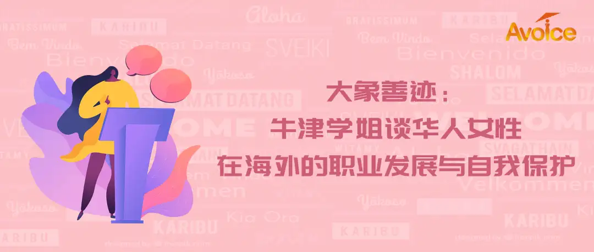
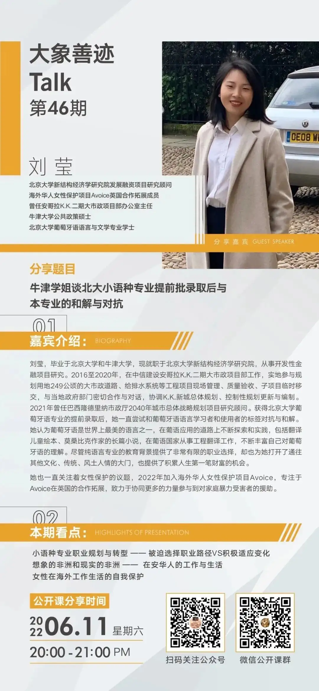
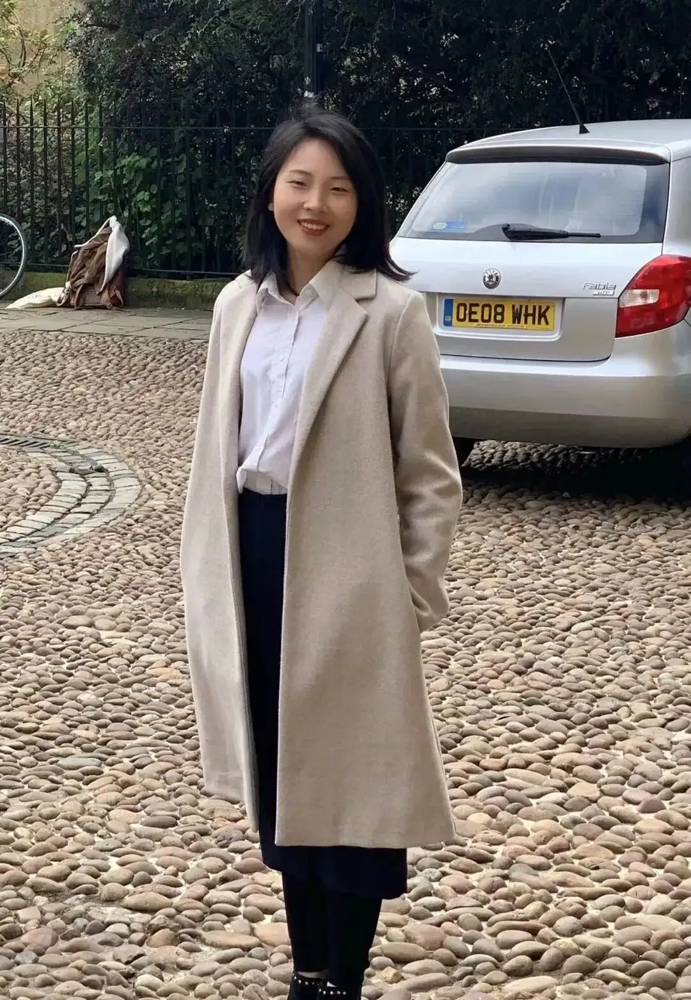

本期看点：
小语种专业职业规划与转型 ——被迫选择职业路径VS积极适应变化 想象的非洲和现实的非洲 ——在安华人的工作与生活 女性在海外工作生活的自我保护


分享嘉宾：刘莹
北京大学新结构经济学研究院发展融资项目研究顾问
海外华人女性保护项目Avoice英国合作拓展成员
曾任安哥拉K.K.二期大市政项目部办公室主任
牛津大学公共政策硕士
北京大学葡萄牙语语言与文学专业学士
主持人：南美
大象善迹Talk创始人
伦敦政治经济学院硕士
正念、冥想习练者
适合人群：对留学、小语种、拉美、非洲、牛津、职业选择与转型、海外女性自我保护等感兴趣的人群。
直播分享日期：06 月 11 日 周六
北京时间：20：00 -21: 00 PM